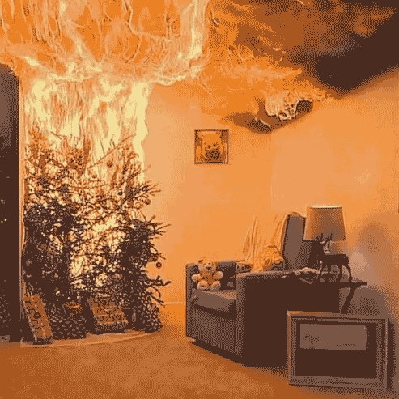

<body>
    </img>
    <a class="hotspot centered move cursor-gift" href='javascript:void(0)' onclick="Frames.show('gift')" style="left: 21.888%; top: 81.666%; width: 27%; height: 15%;
"></a>
    <a class="hotspot centered move" href="./19wizards_domain.html"
        style="left: 3.888%; top: 57.666%; width: 8%; height: 83%"></a>
    <section id="frames" class="Frames">
        <draggable-frame id="test">
            <!--TODO: make this dynamic based on the player's previous position. e.g. only take them back to 19 if they just came from 19-->
            <a class="move" style="font-size: 5vw; text-decoration: none; opacity: 0.5" href="./19wizards_domain.html">
                🔙
            </a>
        </draggable-frame>
        <draggable-frame hidden x=6 y=46 width=35 height=25 id="gift">
            <div>
                <span>there's a bunch of presents here</span>
                <ul>
                    <li><a href='javascript:void(0)' onclick='Frames.show("hyperbox")'>Hyper Box</a></li>
                    <li><a href='javascript:void(0)' onclick='Frames.show("compass")'>Round Box</a></li>
                    <li><a>Rectangular Box</a></li>
                    <li><a>Triangular Box</a></li>
                </ul>
            </div>
        </draggable-frame>
        <draggable-frame persistent hidden id="compass" y=40 width=20 height=20>
            <d-iframe src='./items/compass.html'></d-iframe>
        </draggable-frame>
        <draggable-frame persistent hidden id="hyperbox" y=40 width=20 height=15>
            <d-iframe src='./items/hyperbox.html'></d-iframe>
        </draggable-frame>
    </section>
</body>